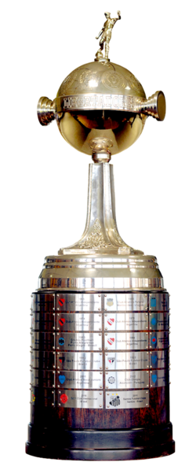
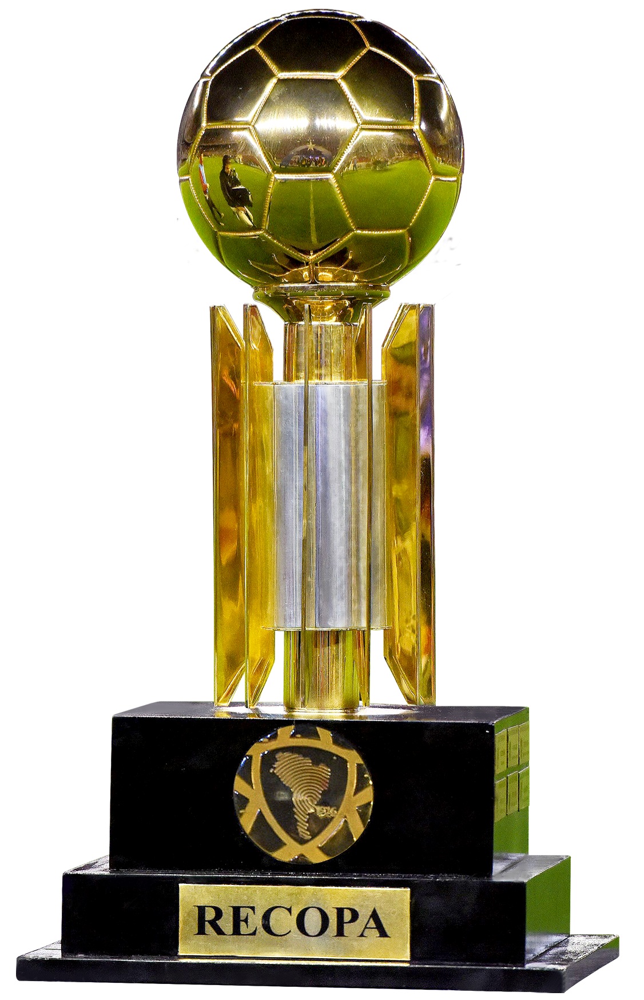
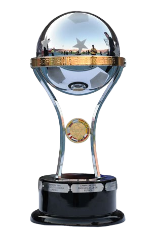
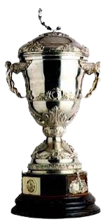
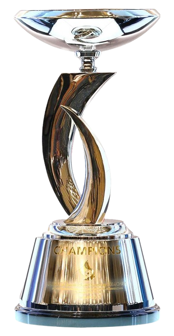
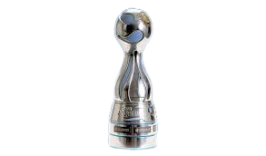
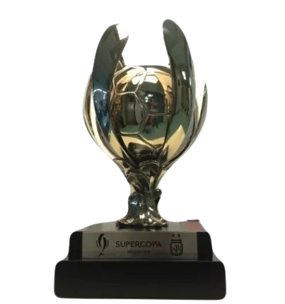
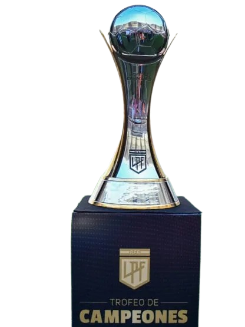

COPAS DE RIVER EN SU HISTORIA
El Club Atlético River Plate es uno de los equipos más importantes de América y del mundo, con una rica historia llena de títulos internacionales. A lo largo de los años, ha conquistado prestigiosas competiciones como la Copa Libertadores y la Recopa Sudamericana, consolidándose como un referente del fútbol sudamericano. Cada uno de estos logros representa momentos históricos inolvidables para sus hinchas, con finales épicas y equipos que dejaron una huella imborrable en la historia del club.
- COPAS INTERCONTINENTALES

- Copa Libertadores(4)

- Recopa Sudamericana(3)

- Copa Sudamericana(1)

- Supercopa Sudamericana(1)

- Suruga Bank(1)
-
- COPAS NACIONALES

- Copa Argentina

- Supercopa Argentina

- Trofeo de Campeones